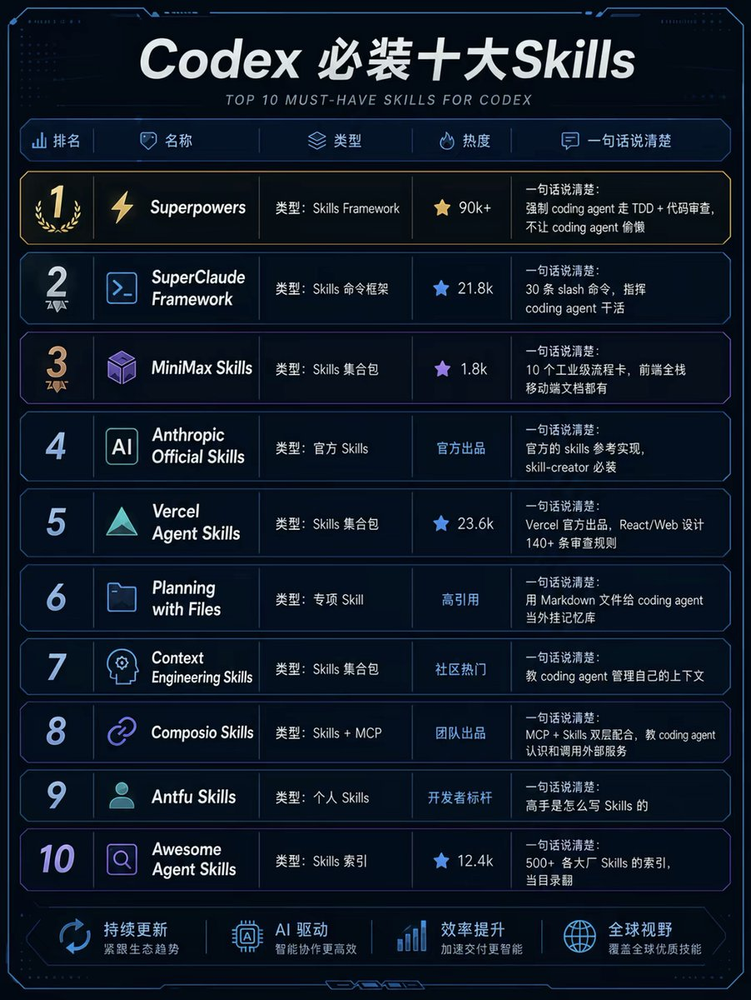

Codex 十大必装 Skills：这不是目录，是 agent 工程化入口
这条帖子真正有价值的地方，不是“十个名字”，而是把 coding agent 拆成了工程纪律、命令框架、上下文管理、外部服务和目录索引几层能力。适合做技能地图，不适合只当收藏清单。
先看结论
它讲的不是“装得越多越强”，而是“怎么把 agent 变成可治理的工程参与者”
这 10 个 Skills 看上去像清单，实际是在给 coding agent 配岗位：先用纪律约束执行，再用命令框架减少随机性，接着用文件 / 上下文 / 外部服务补齐记忆与调用能力，最后用索引和样板间帮助新人快速发现可复用范式。
为什么值得看
它把“coding agent 的可用性”拆成了可学习的部件：纪律、上下文、调用、治理和检索。对准备把 Codex / 其他 agent 真正接入工作流的人，这比单纯追热点更实用。
原帖配图

“十大必装”本身就是一个强主张
它的表达目的不是中性说明，而是把 attention 拉到“skills 作为 agent 能力外挂”的这个方向上。
从“工具名单”翻译成“能力分层图”
真正可用的理解方式是：先看它们属于哪个层，再看对你当前工作流有没有增量。
4 条主线
10 个技能逐条看
让 coding agent 走 TDD 和 review 纪律，减少“看起来能跑、实际有坑”的情况。
先拿一个小改动跑完整的测试—修改—复查流程，观察它会不会主动补测试。
适合要稳定性与可追踪性的任务；不适合被当成“万能魔法”。
把 agent 的动作拆成标准 slash command，减少随机发挥。
选一个命令，让它先拆任务、再拆上下文、再拆交付物。
结构强、学习成本高，适合流程重的团队，不适合随手试试。
以集合包方式展示如何把技能打包成可安装模块。
先看目录和分类，再挑一个与你当前任务最像的技能。
更适合借鉴组织方式，不适合一口气把所有东西都装上。
官方样例，重点在“怎么写技能”而不是“有什么炫功能”。
先读实现约束，再照着写一个最小技能。
是规范参考，不是业务解法；更像教科书，不像成品工具。
偏 React / Web / UI 审查的工程实践集合。
拿一个前端页面让它 review，看看规则能不能覆盖到位。
明显偏 Web 场景，不是通用 agent 全能包。
把 Markdown 文件当作计划板和外置记忆，让 agent 记得自己在干什么。
先给一个小任务写 plan，再看它能不能持续更新。
非常吃纪律；文件一乱，效果会快速掉线。
教 agent 怎么切片、压缩、续接和恢复上下文。
给它一个长任务，观察它怎么控制信息膨胀。
解决的是信息组织，不是知识凭空增加。
把 Skills 和外部服务连接起来，让 agent 真正“能调用、能执行”。
先接一个最常用的外部动作，验证端到端链路是否稳定。
外部依赖越多，权限、稳定性和故障处理要求越高。
看高手怎么写技能：结构、边界、命名和实用性都很克制。
把它当成技能写作的审美标准，而不是成品功能包。
更偏方法与范式，不是直接拿来即用的业务模块。
500+ skills 的发现入口，适合先扫描、再筛选、再安装。
先用它找出你当前任务最接近的技能类别。
它是目录，不是答案；适合发现，不适合直接执行。
常见误读与边界
“安装越多越强”
不是。很多 skills 是框架、参考实现或索引，不是直接提升智力的外挂；真正提升的是工作流的可治理性。
“这是 Codex 专属神装”
也不是。很多能力本质上是给 coding agent 补流程、补记忆、补边界，换到别的 agent 也能用。
skill ≠ model
技能不会替代模型本身的推理上限；它解决的是组织和调用，不是凭空创造能力。
安装 ≠ 会用
不做任务分解、上下文管理和验证，装再多也只是收藏。
怎么用这张卡
先装谁
如果你在做 coding agent，优先看 Superpowers / SuperClaude / Planning with Files；如果你在做产品化 agent，优先看 Context Engineering / Composio / Official Skills。
别怎么用
不要把这 10 个名字当成一张“越多越好”的购物单。它们真正的价值在于：告诉你 agent 的能力应该怎样分层、怎样接入、怎样审查。
来源说明
原帖：X 状态 2060973813010210991。
证据层：X 文本 + 原帖配图。
图片已本地化到 `docs/assets/images/20260531-codex-must-have-skills-poster.jpg`。
最值得记住的一句话
- 这不是“10 个好玩的技能”，而是“agent 工程化分层地图”。
- 先看它属于哪一层，再决定要不要装、怎么装、装到哪里。